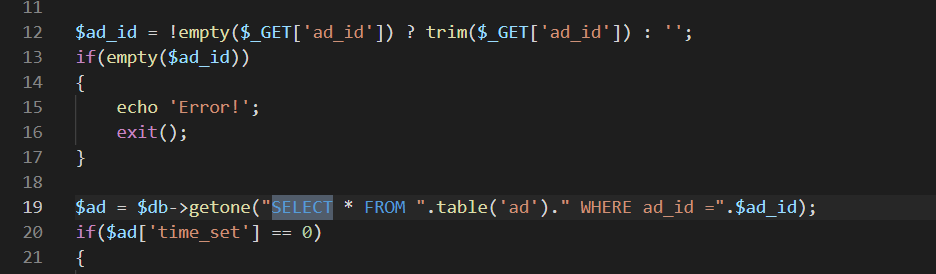
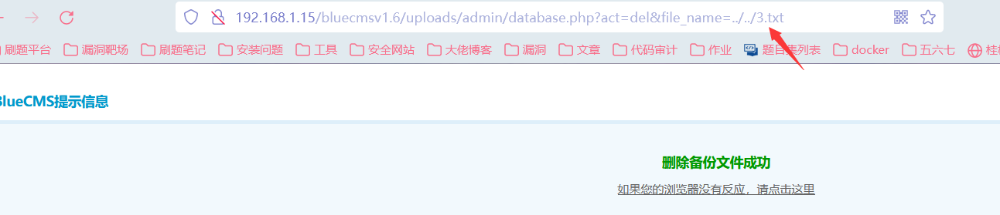

Bluecmsv1.6代码审计
前言
PHP代码审计的初体验，看了很多文章最终选择了Bluecmsv1.6这套源码，代码比较老，但是相对于其他源码来说它的结构更加简单，较好上手。尽管在此之前看过一部分关于代码审计相关的文章，但确实到自己真正着手去做这个事情，就会觉得其实真正上手去做还是会有很多的问题和不一样的感受。
代码架构
代码用到PHP的一个框架，smarty是一个基于PHP开发的PHP模板引擎。
环境搭建
使用phpstudy本地搭建环境，PHP版本：5.3.29。
审计
一开始先找到的几个传参的方法，均使用install_deep_addslashes()方法进行过滤，跟进函数的定义，是对参数进行了addslashes()的转义。
宽字节注入
由于代码比较旧，代码使用的是gbk编码，因此存在较多宽字节注入。
宽字节注入的原理，尽管代码没有对单引号进行转义，在存在宽字节注入的地方，插入数据库的单引号会被自动使用反斜杠进行转义。如果参数是字符串类型，当我们传入的参数为%df’时，因为gbk是多字节编码，两个字节代表一个汉字，所以%df和后面的\也就是%5c变成了一个汉字“運”，而’逃逸了出来（’運’ ‘）。
前台注册页面
1 | insert处存在宽字节注入： |

邮箱处没有过滤。

前台登录：密码处存在万能密码登录
没有对参数进行过滤导致。根据登录的代码，发现login函数，跟进其定义，并没有对密码进行过滤，md5()的形式可以通过闭合构造使用万能密码形式绕过。
构造：
1 | SELECT COUNT(*) AS num FROM blue_user WHERE user_name='wwww' and pwd=md5('123456%df')or 1=1#') |
能实现前台任意用户登录。
数字型注入
ad_js.php
参数$ad_id没有进行过滤，仅是使用GET接收时进行了转义，由于id为数字，因此可以直接构造数字型的注入，使用union联合查询爆破数据库名等信息。

爆破数据库名：
database()
爆出表名：
1 | ad_js.php?ad_id=-1 union select 1,2,3,4,5,6,**group_concat(table_name) from information_schema.tables where table_schema=database()** |
comment.php
insert语句中带入了getip()函数进行ip验证，但是该函数没有对可控参数进行过滤。
在insert查询中，我们可以通过插入多条数据，进行前面数据的闭合，并把需要回显的查询语句放到$content的位置，就可以通过页面直接查看到查询的数据库等值。
getip()参数未过滤。
1 | payload：**CLIENT-IP: 0', '1'),('','1712','0','1','6',(select database()), '1281181973','99** |
或者使用xff也可以。
这里要注意的是插入的第二条数据的id必须和发的用户id保持一致，才能将查询到的结果在留言区回显出来。
publish.php
$online_ip参数未过滤，存在SQL注入。
使用的也是getip()，注入方法一样，就不细写了。
XSS
user.php:更新个人资料：生日、邮箱等信息未进行参数过滤，存在xss
从代码接收的参数可以看到，更新资料处的参数除了$address外均没有进行HTML实体化的过滤，其中一部分数据在修改后会回显在页面上。因此可以通过邮箱、生日等注入点构造xss的弹窗形式。
登录后台发现也会弹出页面，为存储型xss。
任意文件删除
user.php
在文件根目录下生成一个2.txt文件，在修改个人资料的地方进行抓包修改图片路径名称，并且当face_pic1为空的时候成立：
发包之后发现文件成功被删除。
admin/article.php
同上述一样，通过搜索关键字unlink发现存在的任意文件删除点。当满足一下判断条件的时候，可以删除任意本地文件，且参数没有过滤。
admin/database.php
同上述原理。
文件包含
后台admin/tpl_manage.php
任意文件读取 上传一句话木马 getshell：
在模板修改处可以打开本地的HTML等文件进行修改并保存，通过目录穿越的方式可以成功读取到PHP文件。
36行：
能打开本地的任意文件，向PHP文件中写入小马，蚁剑getshell。
前台user.php
这里的注入点结合修改个人资料处上传的图片马也getshell。
后序
一开始是用seay扫出来然后一个个去排查，但是这样做过于繁琐，所以我后面就根据一个个功能点进行测试，根据敏感函数进行跟进。总体来说代码还是相对简单，虽然过程当中也有遇到很多的问题，但是也有在一个个函数去查去看，总体感觉还是挺不错的。但是对代码的整体分析还是需要多分析多看，在平时的练习中也需要多去留意函数的用法，希望能在不断跟着别人思路学习的同时也会有自己的一套方法。